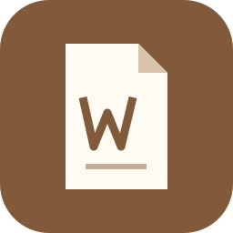

Wordforge: a fast, free, offline word processor
Write letters, reports, essays and assignments on Ubuntu Linux or Windows. Open and save Microsoft Word DOCX files, export PDF, check spelling as you type. Open source, no account, no cloud, nothing sent anywhere.
Developer preview 0.6.7. Usable for everyday writing; not yet a full replacement for Microsoft Word or LibreOffice Writer. Keep copies of important documents.
Features
Word-compatible DOCXOpens .docx, Strict Open XML, .docm, .dotx and .dotm as editable copies and saves .docx. Tested against Microsoft Word on 114 documents.
Real page layoutMargins, A4 and Letter, headers and footers with page numbers, footnotes, page breaks, print and PDF export.
Formatting and stylesFonts, colours, headings, your own styles, bullets and numbering, indents, justified text, line spacing.
ReviewComments and tracked changes with accept and reject, kept when exchanging files with Word.
Tables and picturesMerged cells, column widths, borders, cell shading; PNG and JPEG pictures.
Every languageHindi and Indic scripts, Arabic, Hebrew, Thai, Chinese, Japanese, Korean, emoji; text files in any common encoding.
Private and offlineNo account, no telemetry. Spell check uses dictionaries on your computer.
Fast and nativeC++20, Qt 6 and Skia. No browser engine inside. Crash recovery every 30 seconds.
Install
Ubuntu and Linux: sudo snap install wordforge (amd64 and arm64), or from the Snap Store.
Windows 10 and 11: the installer or portable ZIP for x64 and Arm PCs. No administrator rights needed.
Not yet
Word 97–2003 .doc, RTF and OpenDocument .odt; endnotes, tables of contents, sections and columns; screen-reader support is incomplete. See the compatibility matrix.